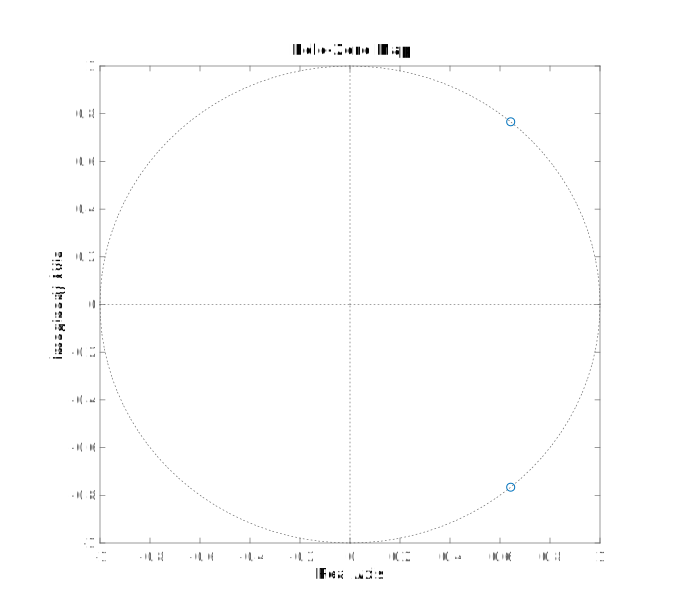
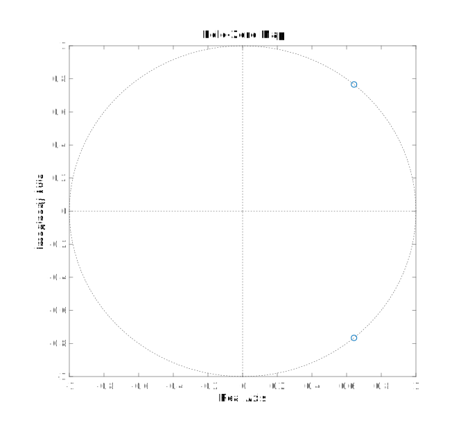

This is an example on how to design a very simple FIR notch filter in the digital domain,
that can be used to filter out 50/60 Hz mains noise, for example.
It is a very simple filter, so the frequency response is not great, but it might be all you need.
It's only second order, finite impulse response, so very fast and always stable, and has linear phase.
Zero Placement
To achieve notch characteristics, we'll just place a single complex pair of zeros on the unit circle.
Let's say we have a sample frequency of \(360 \;\mathrm{Hz}\) and we want to filter out \(50 \;\mathrm{Hz}\) noise.
We'll first calculate the normalized frequency \(\omega_{c,d}\):
$$ \begin{split}
f_s &= 360 \;\mathrm{Hz} \\
f_c &= 50 \;\mathrm{Hz} \\
\omega_{c} &= 2\pi f_c \approx 314.2 \;\mathrm{rad} \;s^{-1} \\
\omega_{c,d} &= \frac{\omega_c}{f_s} \approx 0.8727 \frac{\mathrm{rad}}{\mathrm{sample}}
\end{split} $$
We know that the frequency response \(H(\omega)\)of a digital filter is just the transfer function \(H(z)\)
evaluated along the unit circle \(z = e^{j\omega}\). In other words, we just need a transfer function that is zero
when the frequency equals \(\omega_{c,d}\), or when \(z = e^{j\omega_{c,d}}\). Because the transer function must have
real coefficients, the complex conjugate will be a zero as well: \(z = e^{-j\omega_{c,d}}\).
$$ H(z) = \left(z - e^{j\omega_{c,d}}\right)\left(z - e^{-j\omega_{c,d}}\right) $$
We can further simplify this function by expanding it, and using the identity
\(\cos(\theta) = \frac{e^{j\theta} + e^{-j\theta}}{2}\):
$$ \begin{split} H(z) &= z^2 - z\left(e^{j\omega_{c,d}} + e^{-j\omega_{c,d}}\right) + e^{j\omega_{c,d}}e^{-j\omega_{c,d}} \\
&= z^2 - 2\cos\left(\omega_{c,d}\right)z + 1 \end{split} $$
Normalization
If we want a filter with a unit DC gain (\(H(1) = 1\)), we can just normalize the transfer function:
$$ H_n(z) = \frac{H(z)}{H(1)} = \frac{z^2 - 2\cos\left(\omega_{c,d}\right)z + 1}{2 - 2\cos\left(\omega_{c,d}\right)} $$
Numerical Result
Finally, we can just plug in the value of \(\omega_{c,d}\):
$$ H_n(z) \approx \frac{z^2 - 1.286z + 1}{0.7144} = 1.400z^2 - 1.800z + 1.400 $$
Bode Plot & Zero Map
Let's take a quick look at the bode plot and the locations of the zeros.
The Python code to generate the Bode plot can be found below.
 
You can clearly see the expected linear phase of a FIR filter, with a 180 phase jump when the frequency crosses the zero.
The notch itself is not at all narrow. If you want a narrower notch, you could a higher FIR order, or place some poles
close to the unit circle to cancel the effect of the zero.

You can clearly see the expected linear phase of a FIR filter, with a 180 phase jump when the frequency crosses the zero.
The notch itself is not at all narrow. If you want a narrower notch, you could a higher FIR order, or place some poles
close to the unit circle to cancel the effect of the zero.
from scipy.signal import butter, freqz
import matplotlib.pyplot as plt
from math import pi, cos
import numpy as np
f_s = 360 # Sample frequency in Hz
f_c = 50 # Notch frequency in Hz
omega_c = 2 * pi * f_c # Notch angular frequency
omega_c_d = omega_c / f_s # Normalized notch frequency (digital)
h_0 = 2 - 2 * cos(omega_c_d)
b = np.array((1, -2 * cos(omega_c_d), 1)) # Calculate coefficients
b /= h_0 # Normalize
a = 1
print("a =", a) # Print the coefficients
print("b =", b)
w, h = freqz(b, a) # Calculate the frequency response
w *= f_s / (2 * pi) # Convert from rad/sample to Hz
plt.subplot(2, 1, 1) # Plot the amplitude response
plt.suptitle('Bode Plot')
plt.plot(w, 20 * np.log10(abs(h))) # Convert to dB
plt.ylabel('Magnitude [dB]')
plt.xlim(0, f_s / 2)
plt.ylim(-60, 20)
plt.axvline(f_c, color='red')
plt.subplot(2, 1, 2) # Plot the phase response
plt.plot(w, 180 * np.angle(h) / pi) # Convert argument to degrees
plt.xlabel('Frequency [Hz]')
plt.ylabel('Phase [°]')
plt.xlim(0, f_s / 2)
plt.ylim(-90, 135)
plt.yticks([-90, -45, 0, 45, 90, 135])
plt.axvline(f_c, color='red')
plt.show()